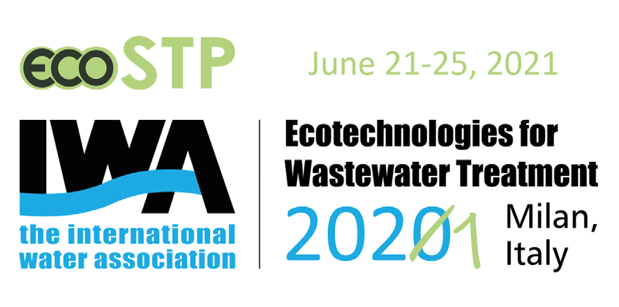

OxTube Ozone se instaló en la tubería de salida de un caudal de agua residual municipal depurada en Kuopio, Finlandia. Un solo paso por el tubo. Sin energía adicional en el lado del agua. Los resultados se presentaron en IWA Ecotechnologies for Wastewater Treatment, Milán 2021.
Source: J. Pylkkänen, OxTube Integrated Water Clarification for Removal of Pharmaceutical Residues and Disinfection, IWA 2021 · Descargar el artículo (PDF, 6 págs.)

El tratamiento convencional elimina sólidos y nutrientes — pero los residuos farmacéuticos lo atraviesan. Acaban en ríos, lagos y, al final, en el mar Báltico. El tratamiento con ozono funciona, pero las balsas de contacto convencionales son grandes, lentas y devoradoras de energía.
Arrastre el divisor. Primero el agua se vuelve turbia y lechosa mientras las impurezas se separan — un segundo después corre clara. Fotografías reales del ensayo del artículo publicado (Fig. 2), sin retocar salvo el recorte.
OxTube es un dispositivo hermético en línea — sin balsa, sin piezas móviles en el agua. Cuatro funciones ocurren secuencialmente dentro de un tubo, en menos de un segundo:
Medido en el agua tratada de la depuradora municipal de Kuopio. Primer ensayo, sin optimizar — con dosificación hipotética aproximada.
| Medida | Resultado |
|---|---|
| Residuos farmacéuticos, reducción | 90 % |
| Fármacos + químicos medidos, media | 87 % |
| Tiempo total de proceso | 0.7 s |
| Ozono residual en el agua tratada | negligible |
| Oxígeno disuelto tras el tratamiento | high |
| Energía, lado del agua | none added |
| Substance | OxTube Ozone | Present method 1 | Present method 2 |
|---|---|---|---|
| Cetirizine | 99.9 % | <20 % | <20 % |
| Diclofenac | 99.7 % | <20 % | <20 % |
| Losartan | 99.6 % | <20 % | <20 % |
| Furosemide | 97 % | <20 % | <20 % |
| Citalopram | 97 % | <20 % | <20 % |
| Mirtazapine | 96.4 % | 31 % | <20 % |
| Quetiapine | 95 % | <20 % | <20 % |
| Azithromycin | 94 % | <20 % | <20 % |
Eight of 40+ measured substances (Table 1 of the paper). Diclofenac is the best-known problem pharmaceutical in EU water policy. Full table: original as image — complete transcription pending before publication.
Por qué importa ahora: la directiva europea de aguas residuales actualizada introduce la responsabilidad ampliada del productor — la industria farmacéutica y cosmética debe cubrir al menos el 80 % de los costes de eliminación de micropollutantes. Fármacos y cosméticos suponen hasta el 92 % de los micropollutantes del agua residual urbana; se estima que 1,8 millones de kg de residuos farmacéuticos llegan al Báltico cada año. La eliminación pasa de voluntaria a obligatoria — y este ensayo es la respuesta medida. (Cifras: Directiva UE de aguas residuales; Helsingin Sanomat vía SansOx, 3/2026.)
“OxTube Ozone Process was identified an efficient and low energy consumption technology in pharmaceuticals removal, and at the same time in waste water clarification and disinfection.”
El ensayo se realizó con una dosificación aproximada de primera pasada — el 87–90 % de reducción es un suelo, no un techo. Como OxTube se instala en la tubería de salida de una planta existente, el mismo montaje sirve para cualquier depuradora municipal donde los residuos farmacéuticos, la desinfección o la calidad del vertido estén en la agenda. El ozono sobredosificado puede reciclarse directamente al canal de gas.
30 minutos, técnico. Traiga sus caudales y permisos de vertido — le diremos honestamente si OxTube encaja.
{kind=link}